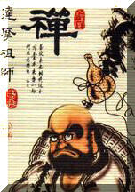

|
|
Đệ Nhất Tổ
|
Vua QUANG-TRUNG Nguyễn Huệ
Sư-Trưởng TRƯƠNG-THANH-ÐĂNG
|
|  |
Thiền-Sư BỒ ÐỀ ÐẠT MA
Sáng Lập Môn Phái THIẾU-LÂM, Trung-Quốc
|
Có một vài sự
kiện lịch sử gây nên nhiều bàn cải sôi nổi, gay gắt
về bản chất và thực thể của Thiếu Lâm Tự. Chúng ta
đã biết, có một số giáo sư của một vài trường
đại học đã bác bỏsự hiện hữu của Thiếu
Lâm Tự hoặc những tông phái của Thiếu Lâm, chỉ có sự
chứng thực của chính quyền Cộng Sản Trung Quốc
được cho là đúng thôi: hoặc là những ngôi chùa trên chỉ là
giả tưởng, dựa trên những câu chuyện trong tiểu
thuyết thời xa xưa.
Theo sự quan sát
mới đây, chính người Mỹ cũng bị lừa dối
về sự thật của những sự kiện lịch sử trong
cuộc nội chiến Nam Bắc, mà thực ra đó chỉ là những
sự kiện tưởng tượng được trích ra từ
một quyển tiểu thuyết có tựa đề là "Cuốn theo
chiều gió"
Những xác nhận sau đây
được thu thập từ:
|
| 1.
|
Những người
đã tập luyện công phu đến bậc Võ Sư tại
những ngôi chùa có tên trong truyền thuyết. |
|
| 2.
|
Những người
đã theo học võ thuật tại những ngôi chùa ấy,
trước khi những công trình nói trên bị hủy diệt.
|
|
| 3.
|
Những người
đã được truyền dạy bởi những sư phụ
từ những ngôi chùa kia. |
|
|
| Cũng
thế, những tài liệu xuất xứ được công nhận xác
thực bởi ít nhất ba nhân vật ( bằng chứng
được hầu hết các ký giả chuyên nghiệp chấp
nhận). Tuy nhiên, những vị võ sư nầy xin từ chối nêu lên
danh tánh vì những lý do sau: |
| 1.
|
Họ không muốn tham gia
vào sự tranh luận - những tin tức này tùy độc giả
công nhận hay không. (cũng giống như lời khai thị
của Đức Phật trong bài giảng cuối cùng).
|
|
| 2.
|
Họ đã thay
đổi tên họ khác đi , vì khi tị nạn họ không
muốn những thân nhân còn lại của họ bị quấy
rầy bởi nhà cầm quyền. |
|
|
Chúng tôi
đã đồng ý giử kín xuất xứ và danh tánh của những
nhân vật đó.
Câu chuyện
được kể lại như sau:
Môn
phái Thiếu Lâm Tự xuất hiện vào khoảng 540 sau Tây Lịch, vào
lúc một tăng sĩ người Ấn có tên là Bồ Đề
Đạt Ma du hành đến nước Trung Quốc và được
mời vào gặp nhà vua. Vào thời ấy, Hoàng Đế đã ra
lệnh các tăng sĩ Trung Quốc dịch những bộ kinh Phật
từ chử Phạn sang chữ Hán, mục đích là muốn phổ
biến rộng rãi tôn giáo này trong dân gian hơn.
Đó là một đề án cao cả và nhà vua tin
rằng đó là công đức giúp ông ta đạt đến Niết
bàn, Bồ Đề Đạt Ma không đồng ý vì Ngài cho rằng:
|
|
"Theo giáo lý nhà Phật,
người ta không thể nào đạt được Niết bàn
bằng cách bảo người khác làm điều thiện
dưới danh nghĩa của mình." |
|
|
Từ
đó, Bồ Đề Đạt Ma cáo biệt đức vua và
đến một ngôi chùa, nơi mà các tăng sĩ Phật giáo đang
dịch kinh Phật.
Ngôi chùa này đã
được kiến tạo nhiều năm trước trên một
khoảng đất đã đưọc khai hoang. Trong thời gian xây
dựng ngôi chùa, những người phụ trách trồng cây đã
trồng tại đây những cây mới, vì vậy ngôi chùa có tên là "
Rừng cây non " (Chữ Hán gọi là Thiếu Lâm).Khi Ngài Bồ
Đề Đạt Ma đến ngôi chùa này, Ngài không được ai
ra tiếp đón, có lẽ vị sư trụ trì cho Ngài là một
người mới nổi tiếng hoặc chỉ là một ngoại
nhân thích can thiệp vào chuyện người khác. Vì không một ai
để ý đến nên Ngài bèn đến một hang động kế
bên và tọa thiền.
Cho đến một
lúc các tăng sĩ trong chùa tự nhiên cảm nhận được
sự hiện diện của Ngài và tìm đến tiếp nhận Ngài.
Truyền thuyết kể rằng Ngài đã dùng ánh mắt mình soi thủng
một lỗ sâu trên vách hang động; thực ra sự chứng
nghiệm này đã không còn dấu vết trong lịch sử.
Khi Ngài đến sinh hoạt với các tăng
sĩ, Ngài nhận thấy họ không có sức khỏe tốt. Hầu
hết công việc của họ giống như những tu sĩ Ái
Nhĩ Lan thời Trung Cổ, những tăng sĩ này ngày ngày
chỉ biết khom mình trên bàn để chép lại kinh điển.
Kết quả là các tăng sĩ Thiếu Lâm Tự nầy đã
thiếu sót rất nhiều về thể lực và tinh thần
để làm việc , ngay cả việc Thiền định là công
việc chính yếu của người tăng sĩ Phật Giáo.
Bồ Đề Đạt Ma bổ sung khuyết
điễm đó bằng cách dạy họ những động tác
thể dục hầu trau giồi sức khỏe và tăng trưởng
khí lực. Những thế võ đầu tiên của Thiếu Lâm Tự này
đã được biến cải từ phương pháp tập Yoga
Ấn Độ (Hatha yoga, Raja yoga), dựa trên những động tác
của 18 con thú (cọp, nai, beo, bò cạp, rắn, rồng v.v...).
Thực khó mà nói những động tác thể
dục này biến thành võ thuật từ hồi nào. Chùa Thiếu Lâm
tọa lạc trong một vùng hẻo lánh, nơi thường có bọn
thổ phỉ và thú dữ vảng lai, do đó những thế võ ban
đầu nầy được dùng để tự vệ. Sau đó,
những độỉng tác này được hệ thốáng hóa
lại, theo thời gian chi phái Phật giáo này đã dần trở nên khác
biệt vì ngoài công phu kinh kệ hằng ngày, họ còn tập luyện
thêm võ thuật.
Không thể kết luận
là Ngài Bồ Đề Đạt Ma đã phát minh ra võ thuật. Võ
thuật đã có mặt tại Trung Quốc trước đó hàng bao
thế kỷ. Nhưng trong phạm vi của ngôi chùa nầy , có thể võ
thuật đã được phát triển và hệ thống hóa bằng
một cách thức khác biệt , mới mẻ, độc đáo hơn :
môn phái Thiếu Lâm Tự.
Một trong
những vấn đề mà những nhà sử học phương Tây
phải đương đầu là sự mâu thuẩn giữa giáo lý
bất bạo động của nhà Phật và trình độ võ thuật
thượng thừa trong truyền thuyết Thiếu Lâm Tự.
Thực ra , người luyện công phu Thiếu
Lâm Tự không bao giờ tấn công, cũng không phung phí sức lực
để phòng thủ . Trái lại, nhờ luyện tập công phu mà
họ thấu hiểu được lực bạo động và
kết quả là tránh phải đương đầu hay va chạm
với người khác.
Do đó, một nhà
tu từ chối không nhận những lời nói hay hành vi bạo
động là để hoàn lại những việc này cho chủ nó. Ban
đầu người luyện võ có thể chọn sẽ né tránh thế
tấn công, nhưng nếu đối thủ giỏi võ lại muốn
gây thương tổn thì Thiếu Lâm tăng sĩ sẽ dùng
những thế đối kháng để địch lại, từ
những thế khóa tay chân đến đánh cho bất tỉnh hoặc
thiệt mạng. Nếu đối phương dùng những đòn
hiểm hóc và mạnh bạo, thì chính những đòn thế hiểm
độc này sẽ được trả về cho chính họ.
Do đó, tăng sĩ Thiếu Lâm Tự không bao
giờ cố ý gây thương tổn hoặc hãm hại một ai.
Triết lý Thiếu Lâm Tự bắt đầu từ Phật giáo, sau
đó gia nhập thêm những nguyên lý của Đạo giáo để
trở thành một chi phai mới. một sự phối hợp các
triết lý thường thấy tại Trung Hoa lúc bấy giờ.
Những ngôi chùa khác khởi nguồn từ Hồ
Nam. Việc này xảy ra vì ngôi chùa nguyên thủy chịu nhiều sự
tấn công liên tục và phải ngưng hoạt động dưới
những triều đại vua chúa và những quan lại địa
phương nghi kỵ lực lượng võ thuật của những
tăng sĩ bất phục tùng. Những tăng sĩ Thiếu Lâm
Tự phải bỏ chùa để tị nạn tại những ngôi chùa
Phật Giáo hoặc Đạo giáo khác hoặc tiếp tục dạy võ
trong dân gian.
Có một vài trường
hợp hiếm thấy, một ngôi chùa Thiếu Lâm mới
được dựng lên (Phúc Kiến, Quảng Đông) hay sửa sang
lại từ những ngôi chùa cũ (Vô Trần, Ô Mỹ San). Những
tăng sĩ tham gia vào chính trị và quân đội (như truyền
thuyết phái Bạch Mi và Hồng hy Quan)là những người gây
rắc rối liên tục cho những tăng sĩ Thiếu Lâm Tự.
Cuộc cách mạng " Ý Hở Thuận
" ( Boxer ) năm 1901 khởi điểm cho thời đại suy tàn
của những ngôi chùa Thiếu Lâm. Trước đó nước Trung
Hoa bị người Nhật và Tây Phương chiếm cứ do
nguồn lợi ích thương mãi. Người Anh đã iến hoàng
triều thành một chế độ bù nhìn, họ đưa vào Trung
Quốc á phiện và những loại thuốc đầu độc khác
làm cho dân nghèo ảnh hưởng nặng. Sự kiện này dẫn
đến sự xăm lăng của các nước khác như Nga, Pháp,
Hòa Lan và sau đó là Nhật và Hoa Kỳ.
Vào
cuối thập niên 1800, lãnh thổ Trung Quốc bị chia ra nhiều vùng
ảnh hưởng, mỗi vùng được kiểm soát bởi
một lực lượng ngoại quốc (giống như Bá Linh sau
thế chiến thứ hai).
Sự thù
nghịch giửa Trung Hoa và Nhật Bản ngày càng trầm trọng và lan
ra cả đối với những lực lượng ngoại quốc
khác. Cộng thêm sự bất mãn với triều đình đương
thời một cuộc cách mạng toàn quốc đã được
khởi xướng, những tăng sĩ Thiếu Lâm Tự cũng có
mặt trong đoàn chiến sĩ tiền phong. Tuy rằng những
cuộc tấn công nổi dậy lật đổ chính quyền của
họ không hoàn toàn thành công (nhiều nhân vật trong nhóm này tin theo phù phép
Đạo giáo, tưởng họ có thần công hộ thể, đao
thương bất nhập).
Sự thất
bại tạm thời này giúp họ chỉnh đốn lại hàng
ngủ theo các phương cách hiện đại hóa với súng ống
tối tân và chiến thuật mới mẻ hơn. Sự rút lui của
các lực lượng Tây phương kéo dài trong nhiều năm, và khi
Đệ Nhất thế chiến chấm dứt, Trung Quốc hầu
như lâm vào cuộc nội chiến sứ quân. Không những chỉ có
quân đội quốc gia chiến đấu cho triều đình mà
cả hai bên cùng hiệp sức đánh Nhật và các lãnh sứ quân (
Nhật lúc ấy còn chiếm giữ nhiều phần đất phía
Bắc Trung Quốc) . Nhiều cương thổ Trung Hoa hầu như
vô chánh phủ, nhưng năm 1931, hầu hết những đế
quốc Âu Châu bị đẩy lui, và hai lực lượng chánh lúc
bấy giờ là Quốc gia và Cộng Sản.
Cả hai phe đều đưa ra chiêu bài yêu
nước nhưng lại chống đối nhau. Nếu phe này không theo
phe kia thì bị kêu là phản loạn. Kết quả là võ sĩ Thiếu
Lâm và những tăng sĩ khác lần lần bị sát hại bởi
cả hai phe. Sự việc này khiến cho những tăng sĩ phải
bỏ trốn lên núi, hoặc ra nước ngoài với hy vọng sẽ
lưu truyền đời sau kiến thức võ thuật nếu một
mai chùa Thiếu Lâm bị hủy diệt.
Những ngôi chùa Thiếu Lâm kém may mắn đã là
nạn nhân của chiến tranh trên một đất nước mà
lịch sữ truyền thống thờ cúng tổ tiên đã bị
lảng quên. Tất cả đều bị lục tung và tàn phá bởi
những lực lượng võ trang khác nhau. Chùa Ô Mỹ Sơn trên
ngọn Trường Bạch Sơn tỉnh Phúc Kiến tọa lạc
trên đỉnh núi bị nghi ngờ là nơi huấn luyện hỏa
lực cho nghĩa quân. Cho nên bị hai phe Quốc Cộng thay phiên nhau
dội bom. Nơi đây được trùng tu thành nơi chứa tài
liệu y khoa và lịch sử tự nhiên, và bây giờ là Quốc gia lâm
viên và trụ sở chính nghiên cứu bảo tồn giống gấu Panda.
Có nhiều truyền thuyết khác nhau nói
về lịch sử Thiếu Lâm, đặc biệt là 300 năm trở
lại đây . Tuy nhiên, nhiều truyền thuyết đáng nghi ngờ (
hảy so sánh tin tức Thiên An Môn của báo chí Trung Quốc và tin tức
của đài CNN ) từ những báo cáo chung chung được chứng
thực là của chính quyền. Thực ra thì những người co'
thẩm quyền đã loại Thiếu Lâm và những môn võ thuật khác
ngoài vòng pháp luật, đã làm cho lịch sử Thiếu Lâm từ
những xuất xứ trên trở nên đáng nghi ngờ. Võ công
đương thời bắt nguồn từ sự thỏa thuận
của chính quyền Trung Quốc sau Đệ nhị thế chiến
cộng với nhu cầu quốc gia và lịch sử truyền thống
võ thuật.
Tuy nhiên, võ công đương
thời ở Trung Hoa không được thiết lập như là
một nghệ thuật đánh đấm, chỉ phát triển theo sau
sự phổ thông của võ thuật Kung Fu.
|
|